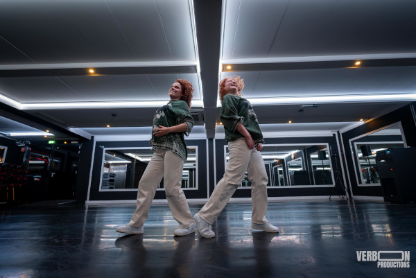
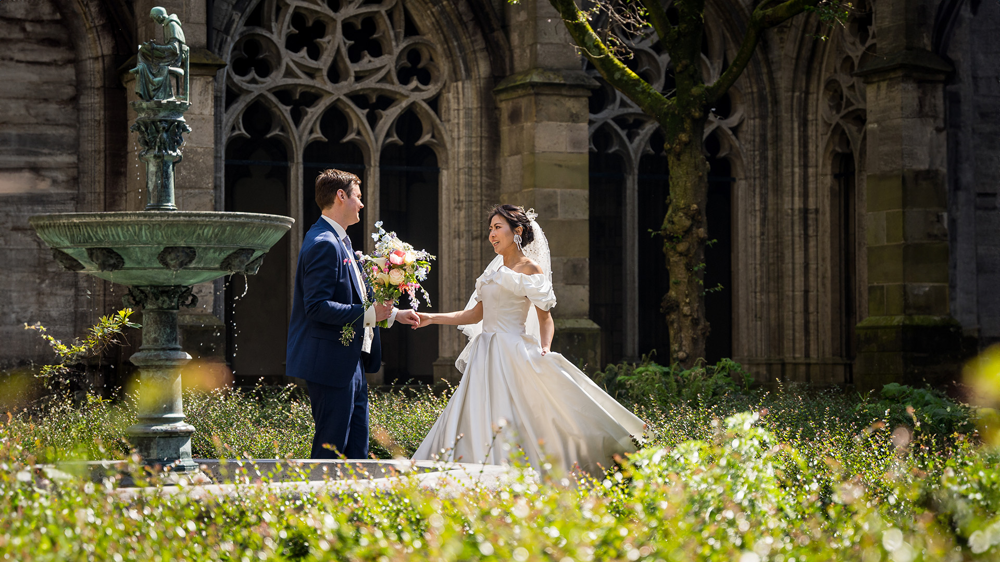
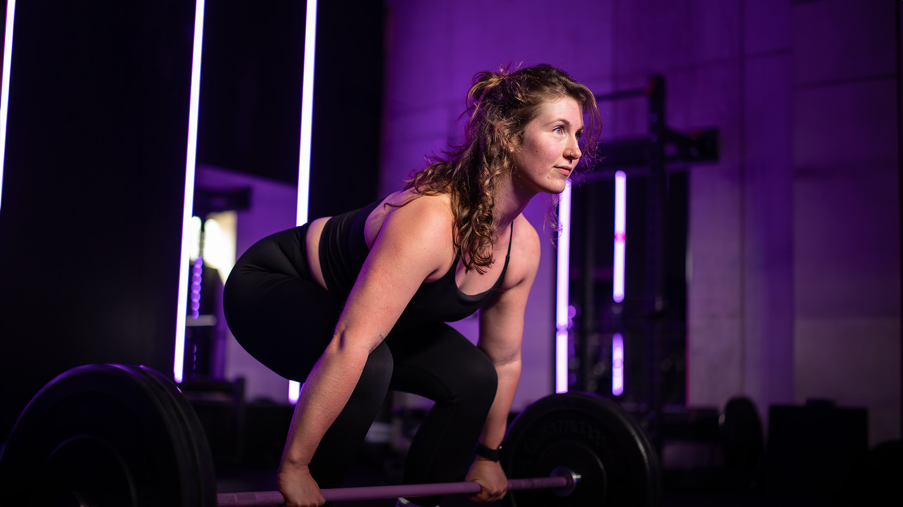

Als videograaf heb ik al veel bijzondere momenten mogen vastleggen, maar de training op grote hoogte die ik voor Red Panda Works heb gefilmd, was echt uniek. Een luchtballon als setting brengt natuurlijk wat uitdagingen met zich mee—zoals snel de interviews opnemen vóór het opstijgen en met de drone de ballonnen volgen voor die spectaculaire beelden vanuit de lucht. Het was hectisch, maar juist dat maakt dit werk zo interessant en leuk.
Ik heb ervaring met allerlei soorten bedrijfsvideo's, van korte interviews tot uitgebreide bedrijfsfilms en alles daartussenin. Wat ik vooral belangrijk vind, is om precies dat vast te leggen wat een evenement of bedrijf uniek maakt. Of het nu gaat om een dynamische aftermovie of een gedetailleerde trainingsvideo, ik zorg ervoor dat de video aansluit bij wat jouw bedrijf wil uitstralen.
Ik werk graag nauw samen om ervoor te zorgen dat het eindresultaat niet alleen mooi is, maar ook echt vertelt wat je wilt overbrengen. Elke opdracht zie ik als een nieuwe uitdaging en een kans om iets bijzonders te maken.

Dans Videografie
×
Dans heeft iets magisch—de manier waarop beweging en muziek samenkomen, maakt het een van de mooiste vormen van expressie om vast te leggen. Toen ik een paar dansers in mijn gym zag oefenen, wist ik meteen dat ik dit moest filmen. Wat begon met één danscrew, groeide al snel uit tot meerdere. Elke keer weer ben ik onder de indruk van de energie en passie die dansers in hun routines steken.
Het mooie aan dansvideografie is dat de choreografie meteen structuur biedt voor de video. Dit geeft me de kans om creatief te zijn en echt iets bijzonders neer te zetten. Bij het maken van muziekclips kan ik bijvoorbeeld meer spelen met effecten en de editing helemaal afstemmen op de beat, wat de video nog krachtiger maakt.
Ik sta altijd open voor nieuwe dans- en muziekprojecten. Het is geweldig om de bewegingen, emoties en het verhaal van een dans vast te leggen en om samen met de dansers iets te creëren dat zowel visueel als muzikaal indruk maakt.

Bruiloft Videografie
×
Bruiloften zijn een van de mooiste en meest memorabele momenten in het leven, en het is altijd een voorrecht om die speciale dag vast te mogen leggen. Als videograaf voel ik de verantwoordelijkheid om elk belangrijk moment, van de eerste blik tot het laatste feest, perfect in beeld te brengen. Er is maar één kans om het goed te doen, en dat maakt het werk niet alleen spannend, maar ook ontzettend belonend. Als het bruidspaar blij is met het resultaat, dan ben ik dat ook.
Naast bruiloften leg ik ook graag andere bijzondere momenten vast, zoals familieshoots, zwangerschappen, en babyshowers. Deze mijlpalen in het leven verdienen het om op een mooie en betekenisvolle manier gedocumenteerd te worden. Voor mij is het geweldig om de vreugde en liefde in deze momenten te kunnen vastleggen en ze om te zetten in blijvende herinneringen.
Of het nu gaat om een intieme ceremonie of een grootse viering, ik zorg ervoor dat jullie verhaal op een manier wordt verteld die recht doet aan de emotie en schoonheid van de dag. Het is mijn passie om deze momenten vast te leggen, zodat ze nog jaren later kunnen worden herbeleefd.

Sport Videografie
×
Sport zit vol energie en passie, en dat is precies wat ik graag vastleg met mijn camera. Om de hoek van mijn huis ligt een sportschool waar ik momenteel de marketing help versterken. Ik bedenk contentstrategieën, schiet alle beelden en zorg ervoor dat alles op het juiste moment wordt gepost. Het is geweldig om te zien hoe enthousiast en trots mensen zijn op wat ze kunnen bereiken, en die emoties breng ik graag over in mijn video's.
Daarnaast had ik het voorrecht om te werken met een wereldkampioen waterskiën. Dat was een geweldige ervaring en een enorme eer. Het vastleggen van sportmomenten, of het nu in de sportschool is of op het water, biedt telkens weer nieuwe uitdagingen en mogelijkheden. Van snelle, actievolle clips tot meer persoonlijke portretten van atleten—ik zorg ervoor dat de energie en het verhaal van de sport in elke video tot leven komt.
Voor mij draait sportvideografie om het vangen van die intense momenten van inspanning, succes en plezier. Ik werk graag samen om jouw sportieve prestaties op een krachtige en inspirerende manier te laten zien.
Over Verboon Productions
Mijn naam is Maarten en ik ben een foto-/videograaf uit Utrecht. Al
van jongs af aan was ik gefascineerd door beelden. Op mijn 13e toverde ik mijn slaapkamer
om tot filmstudio, waar ik met mijn webcam epische toneelstukken opnam en bewerkte tot
'Oscarwaardige' films. Na mijn studie Biologie besloot ik mijn passie voor film en fotografie
nieuw leven in te blazen, en van mijn hobby mijn carrière te maken.
Mijn missie:
Unieke verhalen vertellen met beelden. Of het nu gaat om een interview, evenement,
portretshoot of een spectaculaire klus in weer en wind op een windmolen, ik ga altijd voor
het beste resultaat. Met mijn camera leg ik de essentie vast, met oog voor detail, emotie en
humor.
Mijn stijl:
Dynamisch, energiek en met een vleugje humor. Ik hou van beelden die bewegen, die
emotie en kracht uitstralen. Het leven is te kort om saai te zijn, dus ook in mijn werk mag er
gelachen worden.
Mijn werk:
Van interviews tot bedrijfsvideo's, van portretten tot actie shots, ik ben van alle markten
thuis. Momenteel werk ik veel samen met een sportschool in de buurt, waar ik de energie en
passie van de sporters vastleg in unieke beelden.
×
Jouw project
Ben je op zoek naar iets unieks? Iets waar je met trots naar terug wilt kijken? Wil je je
website of bedrijfsvideo naar een hoger niveau tillen?
Neem contact met me op en we bespreken samen de mogelijkheden.